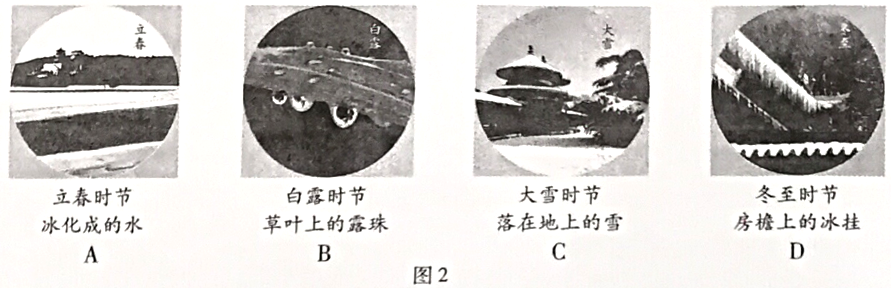
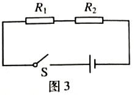
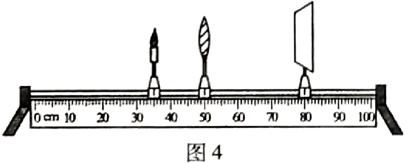

2018年北京市中考物理试题 · 选择题 第6、7、8、9、10题
6. 下列实例中，为了减小摩擦的是
A. 足球守门员戴有防滑手套 B. 骑自行车刹车时用力捏闸
C. 运动鞋的底部制有凹凸不平的花纹 D. 给自行车的车轴加润滑油
7. 下列实例中，属于做功改变物体内能的是
A. 锯木头时的锯条温度升高 B. 加入冰块的饮料温度降低
C. 倒入热牛奶的杯子温度升高 D. 放入冷水中的热鸡蛋温度降低
8. 图2所示的物态变化实例中，由于液化形成的是


9. 图3所示的电路中，电阻阻值R1<R2。闭合开关S后，电阻R1、R2两端的电压分别为U1、U2，通过两个电阻的电流分别为I1、I2。下列判断中正确的是 A. I1 = I2 B. I1 > I2
C. U1 = U2 D. U1 > U2

10. 小军做凸透镜成像规律的实验时，将焦距为10cm的凸透镜固定在光具座上50cm刻度线处，光屏和点燃的蜡烛分别位于凸透镜两侧，蜡烛放置在35cm刻度线处，如图4所示。移动光屏，直到在光屏上呈现烛焰清晰的像。下列说法中正确的是A. 光屏上呈现的是烛焰的虚像
B. 光屏上呈现的是烛焰正立的像
C. 光屏上呈现的是烛焰放大的像
D. 该实验现象能说明照相机的成像特点